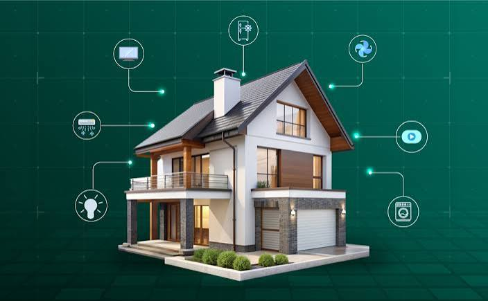

Інтернет речей (IoT) — це мережа звичайних фізичних предметів із вбудованими датчиками та доступом до інтернету, які вміють збирати дані, обмінюватися ними та діяти автоматично без постійної участі людини.
Наприклад, у розумному домі цей принцип працює як єдиний злагоджений механізм: коли ввечері ви підходите до дверей, датчик руху фіксує вашу присутність, а термодатчик бачить, що в кімнаті прохолодно. Вони миттєво передають ці сигнали через Wi-Fi або спеціальний хаб до центральної системи керування. Вона звіряє інформацію із заданими сценаріями та автоматично дає команду розумній лампі увімкнути світло в коридорі, а термостату — прогріти оселю до комфортної температури ще до того, як ви роззуєтеся. Уся суть технології полягає в безперервному циклі: датчики зчитують стан довкілля, мережа передає дані, програма приймає рішення, а пристрої виконують потрібну дію, роблячи побут зручнішим та економнішим.
